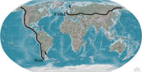

From Chile to England on foot
Chile is a country in South America and England is in Europe, but the problem is that except of it being very far there is an ocean between (in case you don’t know), so it’s probably quite a problem to get from Chile to England on foot.
Yet Karl Bushby decided to try it. He started in 1998 and now he’s somewhere in Russia, having crossed the dangerous Bering Strait. Karl plans on finishing his more than 50 000 km journey in 2009. It’s almost unbelievable that someone is willing to spend more than 10 years of his life just walking around the world…
You can find much more info (photos, journal, etc.) on official pages of the Goliath expedition.
No thoughts on “From Chile to England on foot”
Add your comment — How does this work?